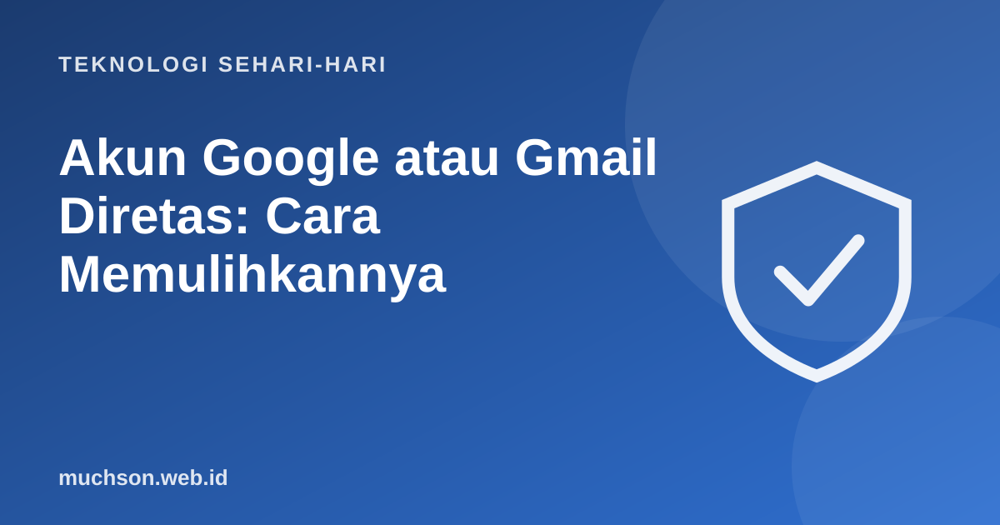

Beranda › Artikel › Teknologi Sehari-hari
Teknologi Sehari-hariAkun Google atau Gmail Diretas: Cara Memulihkannya
Akun Google adalah kunci banyak hal: Gmail, foto, kontak, YouTube, Drive, bahkan login ke aplikasi lain. Bila akun ini diambil alih, dampaknya bisa luas. Artikel ini menjelaskan tanda-tanda akun diretas, langkah pemulihan lewat jalur resmi, dan pengaturan yang membuatnya jauh lebih sulit terulang.

Tanda akun Google diretas
Bila masih bisa masuk
- Buka myaccount.google.com → Keamanan, lalu jalankan Pemeriksaan Keamanan (Security Checkup).
- Ganti kata sandi dengan yang baru, panjang, dan belum pernah dipakai di tempat lain.
- Di Perangkat Anda, keluarkan perangkat yang tidak dikenal.
- Periksa email dan nomor pemulihan. Pastikan milik Anda.
- Di Gmail, periksa Setelan → Penerusan dan Filter. Hapus yang tidak Anda buat.
- Periksa aplikasi pihak ketiga yang punya akses ke akun, cabut yang tidak dikenal.
- Aktifkan Verifikasi 2 Langkah atau passkey.
Peretas sering membuat aturan penerusan email diam-diam, sehingga mereka tetap menerima salinan email Anda (termasuk kode reset akun lain) setelah kata sandi diganti. Selalu periksa bagian ini.
Bila tidak bisa masuk
Gunakan halaman pemulihan resmi Google di accounts.google.com/signin/recovery. Google akan menanyakan beberapa hal untuk memastikan Anda pemiliknya. Tips agar berhasil:
- Lakukan dari perangkat dan lokasi yang biasa Anda pakai, misalnya HP atau laptop di rumah.
- Jawab sebanyak mungkin pertanyaan; tebakan terdekat lebih baik daripada melewati.
- Gunakan kata sandi lama terakhir yang Anda ingat bila diminta.
- Periksa email dan nomor pemulihan untuk kode verifikasi.
Google menyatakan tidak bekerja sama dengan layanan pihak ketiga yang menawarkan pemulihan akun berbayar. Nomor "CS Google" di media sosial atau iklan hampir pasti penipuan.
Setelah pulih: amankan akun lain
Akun Google sering menjadi pintu ke akun lain. Setelah pulih:
- Ganti kata sandi akun lain yang memakai kata sandi sama.
- Periksa akun bank, e-wallet, dan media sosial yang terhubung ke email tersebut.
- Beri tahu kontak bila ada email penipuan yang terkirim dari akun Anda.
- Pertimbangkan pengelola kata sandi agar setiap akun punya kata sandi unik.
Pencegahan: lapisan keamanan
Tanya jawab
Bagaimana cara memulihkan akun Google yang diretas?
Apakah bisa menelepon Google untuk memulihkan akun?
Apa yang diperiksa setelah akun kembali?
Apa itu passkey?
Sumber dan bacaan lanjut
- Google: How to recover your Google Account or Gmail
- Google: Secure a hacked or compromised Google Account
- Google: Pemeriksaan Keamanan
- FIDO Alliance: Passkeys